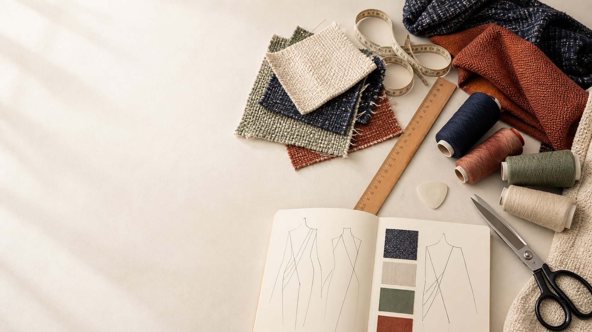

Year 11 Preliminary · evidence portfolio
My textiles folio
Collect the decisions, applied knowledge and evidence that show how your textile work develops. Save locally, explain what each item proves, and keep a backup.
← Return to the course
Evidence first
Collect, explain and protect your work
This is a concise evidence folio, not another theory page. Each card asks for one useful record connected to the course pathway.
- CollectAdd a decision, sketch, result, source record or authorised photo.
- ExplainState what the evidence proves and why it matters.
- Back upDownload the editable backup before changing device or browser.
Your local record
Saving and progress
0 evidence records added
Start with the user and requirements10 cards are blank.
Saved on this browser and device: this page does not upload to Google Drive or submit to Google Classroom. The editable JSON backup includes folio text and added photos. Print / Save PDF creates a readable evidence copy, not proof of submission or practical competence.
Current authority boundary: formal task dates, weights, marking criteria, submission rules, issued patterns, materials and practical procedures remain Teacher to confirm. The folio may collect syllabus-aligned evidence without presenting those historical details as current instructions.